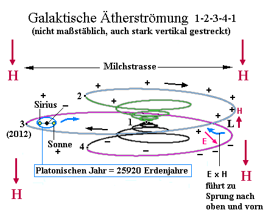
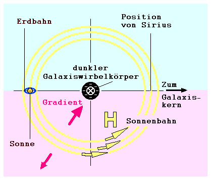
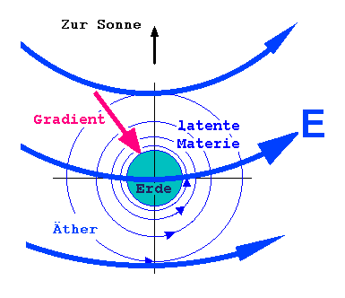
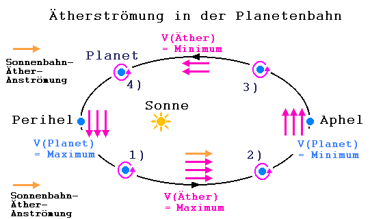

Die Galaxis als AtomDie Sicherung der kaskadierten Energieübergabe zwischen allen Skalengrößen der Welt erfordert einen klaren hierarchischen Aufbau von der größten bis zur kleinsten Struktur. In raum&zeit 130/2004 bin ich genauer auf das Atom eingegangen, wie es sich nach dem Torkado-Konzept im ‚Mutterfeld Erde’ energetisch ernährt, genau wie es auch die höheren, die biologischen Strukturen tun. Jetzt betrachten wir im gleichen Zusammenhang, dem energieübertragenden Raumwirbel (Torkado), die Systeme Erde, Sonne und Galaxis. Jede Sonne bewegt sich innerhalb ihrer Spiralgalaxis nicht nur auf einer direkten Spiralbahn, sondern zusätzlich auf einer Spirale um die Spiralbahn (/2/, S.295) . Wie bereits in /1/ erwähnt, können die Zentren von Torkados als Unterdruckgebiete verstanden werden, die sich als Folge der dynamischen Bewegung von Überdruck-Objekten, wie etwa Elektronen, sekundär bilden. Die Sonne als Zentrum ihres Planetensystems muss demnach die Rolle eines Protons (Äther-Unterdruck) spielen, und kann nicht gleichzeitig in einem größeren Torkado ein Überdruck-Objekt sein. Überdruck- und Unterdruckobjekte zusammen ergeben einen neutralen Torkado, der in etwa die Masse des (kernnahen) Unterdruckobjektes besitzt. Das kann z.B. ein Torkado als Atom, oder als Sonnensystem oder als eine ganze Galaxis sein.  Auf dem Bild sieht man den Galaxis-Torkado, die Höhe etwas übertrieben dargestellt. Da die Bewegung in jedem Torkado außen spiralig hinunter geht und innen spiralig hinauf, ist im oberen Teil hauptsächlich Expansion (hellblau, Radiusvergrößerung) vorhanden, im unteren Teil Kompression (rosa, Radiusverkleinerung). Die hier violett, schwarz, grün und hellblau eingezeichnete Galaxiswirbelbahn besteht aus dichten, laminar fließenden Ätherströmen, ähnlich dem warmen Golfstrom im Atlantik. Auf dem kann man sich ein rotierend-schwimmendes Schiff vorstellen, das nachfolgend eine Sogwelle erzeugt, die das Schiff begleitet. Die im Bild gelb eingezeichnete Bahn wäre dann die Sogwelle, in der die Sonne als solitäres superkaltes Soggebiet erscheint, das zusätzlich von den eigenen Planeten auf ihren Bahnen, die wiederum rotierende Äther-Überdruckgebiete darstellen, ausgesaugt wird, was den Äther-Unterdruck in der Sonne erhöht. Es gibt keinen allgemeinen Urknall. Der dunkle Körper (unser Schiff auf dem Golfstrom), um den die Sonne kreist, wird irgendwann unten in die Kernphase der Galaxis eintreten (Position 4), und auch oben wieder austreten (Position 2). Dazwischen bildet die Sonne, zusammen mit vielen anderen Sonnen, die Galaxis-Kernmasse (Position 1). Über die Dauer dieser Phasen traue ich mich nicht zu spekulieren, weil hier mit dem Radius die Zeit mitschrumpft. Der aktuelle Aufenthalt unserer Sonne dürfte sich derzeit in der Nähe von Position 3 befinden. Die gelbe Ellipse beschreibt ihre Bahn in 25920 Jahren, dem sogenannten Platonischen Jahr. Die gelbe Bahn ist aber eine offene Spirale mit kleinem Vortrieb in die Bildebene hinein. Die Sonne befindet sich Ende 2012 am Punkt des größten Abstands vom Galaxiskern. Gegenüber der Sonne, auch auf der gelben Bahn, bewegt sich gleichsinnig der Stern Sirius, mit dem zusammen sie eine helixartige Doppelbahn beschreibt. Die Bahnebenen violett (Galaxis) zu gelb (Sonne) und gelb zu blau (Ekliptik) sind gegeneinander gekippt. Messbar ist der Winkel violett zu blau von derzeit ungefähr 18 Grad. Die Sonne kommt von einem expandierendem Äthergebiet in ein zusammenziehendes und beginnt nun, sich in die Richtung zum Galaxiskern hin zu bewegen. In esoterischen Kreisen spricht man vom Eintritt der Sonne in den Photonengürtel. Globale Erd-Ereignisse, wie das derzeitige rasante Abschmelzen der Gletscher, ist ein unbeeinflussbarer zyklischer Vorgang, der sich alle 25920 Jahre in ähnlicher Weise wiederholt. Als weitere Folgen stehen ein Polsprung der Erde bevor und auch ein „Dimensionswechsel“, worauf hier nicht näher eingegangen werden soll (siehe /4/). Visionäre und Seher berichten, dass das Jahr 2012 eine Art Wand darstellt, die den Blick auf das Später verstellt. Erst 6000 Jahre danach konnte man zeitlich wieder „landen", wurde in den Berichten zum Thema Zeitreisen behauptet (/3/).
Das Jahr einer SonneDas nächste Bild zeigt den platonischen Sonnenumlauf allein: 
Das schwarze Zentrum der gelben Bahn ist das Flussbett des 'Galaktischen Elektrons' , mit im Vergleich zur Erdbahn unvorstellbarer hoher Ätherdichte. Ein Körper, der darin schwimmt, ist ebenso nichtleuchtend wie ein Planet. Beide können als eine Art Riesen-Elektron angesehen werden. Die eigentlichen materiellen Energieträger sind die in den Ätherflüssen schwimmenden Körper, obwohl ihre Masse relativ gering ist, wie man am Massenverhältnis Elektron zu Proton sieht. Sie tragen die in langen Zeiträumen aufgenommene kinetische Energie der Ätherdynamik. Sie „pflügen“ den Wirbelfluss, der sie später wieder trägt. Aber sie halten ihre Energie fest, lassen sie auch innerlich fraktal strömen auf immer gekrümmteren Bahnen. Erst die Sogstrahlen ihrer eigenen Wirbelschleppe (Sonne, Proton) entlocken ihnen Wärme durch Zerstörung der inneren Torkado-Ordnung (Wirbelturbulenz, Widerstand, thermodynamische Bewegung). Die
Begriffe ‚Sog’ und ‚Unterdruck’ können in diesem Zusammenhang auch als
Synonyme für ‚Magnetfeld’ (positive Ladung, Masse) verstanden werden,
analoges gilt für die Begriffe ‚Körper’ und ‚Überdruck’ als E-Feld (negative
Ladung). Ein Planet befindet sich - galaktisch gesehen - immer in Sonnennähe, das heißt in der Äther-Unterdruck-Wirbelschleppe eines Galaxiswirbelkörpers. Trotzdem ist der Planet ein Überdruck-Teilchen, relativ zur Sonne betrachtet. 
Das Jahr eines PlanetenDie Substruktur unserer Materie, der Äther, wird bisweilen auch latente Materie genannt. Interferometrische Messungen zum Nachweis des Äthers zu Beginn des 20. Jahrhunderts brachten immerhin das Ergebnis einer Relativgeschwindigkeit zwischen Erde und Äther von durchschnittlich 10 km/s, statt der erwarteten 30 km/s. Da das damals nicht ins Konzept eines ruhenden Äthers passte, wurden die Messergebnisse kurzerhand zur Nullmessung abstrahiert. Später wiederholte Messungen zeigten deutliche Schwankungen. Diese Messungen einer wechselnden Relativgeschwindigkeit zwischen Erde und Äther lassen darauf schließen, dass sowohl die Ätherströmung als auch der Planet Bremsphasen und Beschleunigungsphasen innerhalb des Jahresumlaufes durchlaufen. Damit ist klar, dass es eine gesonderte Sonnenbahn-Ätherströmung gibt, die zumindest eine Komponente in die Richtung 'Perihel zu Aphel' hat. Dies ergibt einen Vorlauf der Äthermaximalgeschwindigkeit gegenüber der Planetenmaximalgeschwindigkeit von Pi/2 (siehe Bild). 
1) Am Perihel, dem sonnennächsten Punkt, ist der Planet am schnellsten, wegen der vorherigen Beschleunigung beim „Sturz“ in Richtung Sonne. An dieser Stelle ist die Geschwindigkeit der Ätherströmung am stärksten zunehmend und strömt ab hier den Planeten von hinten an. Der Grund ist die in Bahnrichtung wirkende Sonnenbahnanströmung. Da die Eigenrotation des Planeten gleichsinnig mit der Jahresrotation ist, entsteht ein Auftrieb, der den Abstand von der Sonne vergrößert. 2) Die Ätherströmung hat ihr Maximum überschritten, der Planet ist noch im Steigen, das jedoch nachlässt. Der Planet nähert sich nun dem Aphel, seinem sonnenfernsten Punkt, an dem er auch am langsamsten ist. Die Ätherströmung ist am Aphel genauso schnell wie der Planet, er schwimmt in ihr wie ein antriebsloses Schiff. 3) Die Ätherströmung fällt weiter, da jetzt der Weg des Planeten der galaktischen Ätherströmung entgegengerichtet ist. Der Planet fliegt schneller als die Strömung, er ‚holt das Strömungsmedium ein’, so dass die Strömung von vorn anliegt, was einen Abtrieb bewirkt und den Abstand zur Sonne verkleinert. Der Planet „fällt“ in Richtung Sonne und erhöht wieder seine Geschwindigkeit. Die Geschwindigkeit der Ätherströmung fällt bis zum Minimum. 4) Die Äthergeschwindigkeit hat ihr Minimum überschritten und wächst wieder an, der Planet wird weiterhin von vorn angeströmt und fällt in Richtung Sonne. Die Beschleunigung lässt dabei nach, da auch der galaktische Gegenströmungsanteil kleiner wird. Der Planet erreicht schließlich wieder das Perihel. Dies als einfachste Darstellung eines Planetenjahres und gleichzeitig als einfache Erklärung der Planetenbahnkrümmung überhaupt, die auch auf andere Torkados übertragbar ist. Wenn man berücksichtigt, dass die Planetengeschwindigkeit am Perihel größer ist als am Aphel und jeweils gleich der Äther-Zirkulation (an dieser Stelle ohne Einfluss des galaktischen Anteils), dann muss auch im Ätherfluss noch eine zusätzliche Geschwindigkeit am Perihel „übrig“ sein. Wenn sich das Ganze nicht aufschaukeln soll, denn jedes Mal „pumpt“ der Planet in Phase 3 und 4 Energie aus der Sonne, bzw. in Phase 1 und 2 die Zirkularströmung aus der galaktischen Strömung, muss es irgendwo gleich große Verluste geben. Ich nehme an, der Hauptteil der sogenannten Verluste wird während Phase 1 und 2 ausgegeben, um der Sonne Äther zu entziehen, d.h. um ihr Unterdruck-Potential stabil zu halten. Auf diese Weise wird die Sonne mithilfe der Planetenbewegung verjüngt, wenn nicht gar aufgebaut. Energiequelle ist die galaktische Strömung als Mutterfeld. Das
Sonnensystem ist also keine Scheibe, sondern ein Torkado. Es gibt genügend
Hinweise auf eine viel verwickeltere Bahn der Erde: So besagt der 9-jährigen
Chi-Zyklus (FengShui), dass das Geburts-Chi, die prägende Energieströmung
am Tag der Geburt eines Menschen, aller 9 Jahre aus derselben Himmelsrichtung
strömt. Was ist denn dieses Chi ? Wahrscheinlich solch ein sonnenunabhängiger
galaktischer Ätherfluss. Desweiteren gibt es den 7-jährigen Gedächtniszyklus,
wo die Erde offenbar räumlich wiederkehrende Positionen einnimmt, was
sich förderlich auf unsere Erinnerungen von vor genau 7 (oder 14, 21
usw.) Jahren auswirkt. (Siehe /4/ und Fortsetzung zum
Thema
Quellen: /1/
Gabi Müller: Der Spiralrhythmus der Natur, raum&zeit 130/2004, S. 36-44
Meine Email-Adresse: info@aladin24.de |